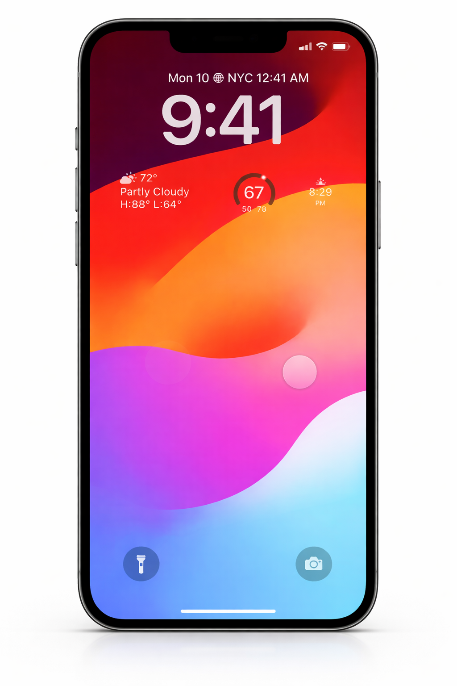

Inclusive Messaging: A Gesture-Driven Communication Feature
Accessibility + Interaction Design
Reducing friction in everyday communication for users experiencing permanent, temporary, or situational vision loss through gesture-based interactions.

What
A gesture-based messaging feature that allows users to send preset text messages using customizable gestures and audio feedback. The system integrates with existing mobile accessibility tools to enable efficient, low-friction communication without relying on visual interfaces.
Why
Texting can become inaccessible or overwhelming when visual input is limited, often leading to delayed or missed communication. This feature reduces cognitive and interaction barriers by offering an intuitive, accessible alternative that supports timely, private, and stress-free messaging.
Problem / Opportunity
Text messaging relies heavily on visual interaction, creating barriers for users experiencing permanent, temporary, or situational vision loss. This creates an opportunity to enhance messaging experiences with a non-visual, gesture-based interaction model that reduces cognitive load and enables faster, more independent communication.
Key Features
👆 Customizable Gesture-to-Message Mapping
Users can assign specific gestures to preset text messages and frequently contacted individuals, enabling quick, non-visual responses without navigating complex interfaces.
🔊 Audio-Guided Interaction & Feedback
Incoming messages are read aloud, and the system provides clear audio prompts and confirmations to guide users through replying, ensuring confidence and reducing interaction errors.
Process and Exploration

Outcome
The gesture-driven messaging feature demonstrates how interaction design can extend beyond screens to support inclusive, real-world use cases. Through persona development, workflow mapping, and accessibility research, the solution prioritizes clarity, efficiency, and user control.
This project shows that accessible design isn't about adding features for a minority—it's about creating better experiences that benefit everyone who encounters moments of limited vision or heightened stress.